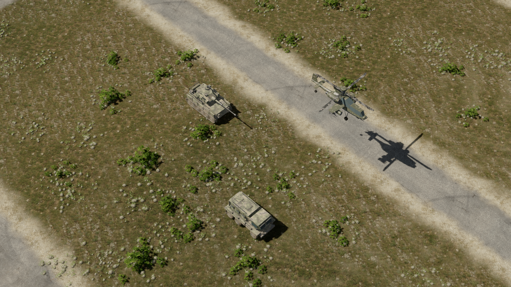
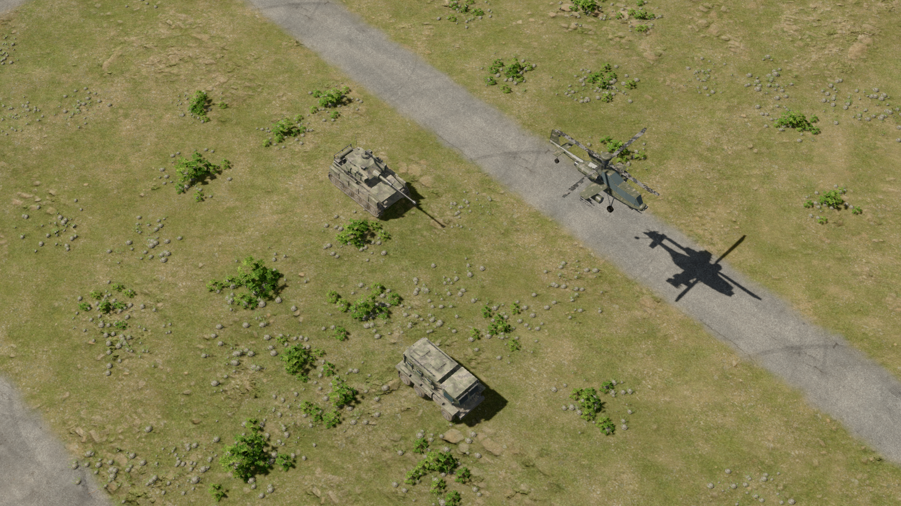
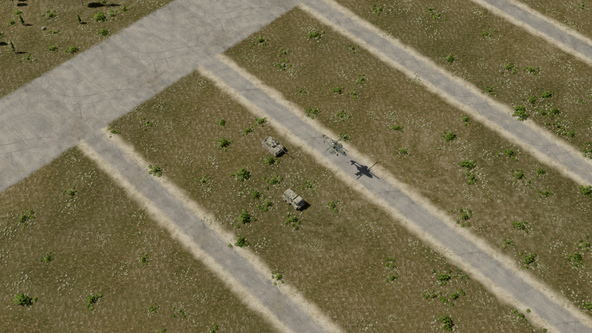
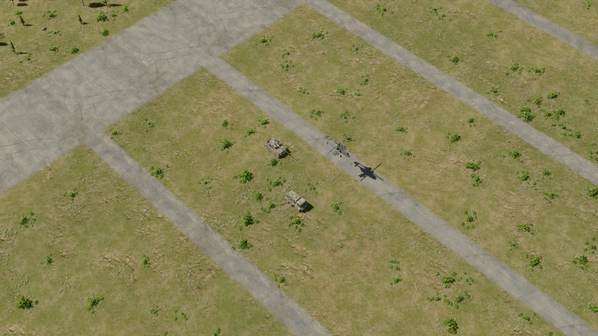

Two new overhead textures vary between denser olive meadow and drier stony scrub. Dark soil, straw, embedded stones and creeping plants add small-scale separation. The foliage palette is less bright and more muted. This is active in ordinary matches, the training ground and the demo.
Matched native 1920×1080 captures use the same camera and lighting. Baked short ground shadows follow the existing sun direction; texture variation uses translations, without rotation or mirroring. Larger objects and vehicles keep live shadows. Existing macro relief, paved surfaces, tracks and collision rules remain in place.
Drag: previous terrain on the left; applied earthy grass blend on the right.


Previous full-resolution viewApplied full-resolution view
Drag: previous terrain on the left; applied earthy grass blend on the right.


Previous full-resolution viewApplied full-resolution view
Restart the game to load the new textures. The existing terrain demo launchers also show the latest blend and legacy comparison. Graphics quality remains adjustable. AI companion heights provide approximate shallow normals; they are not measured scans.
Exact generation prompts · Colour calibration prompts · Material settings · Native checks · Live variation mask: olive red, stony green